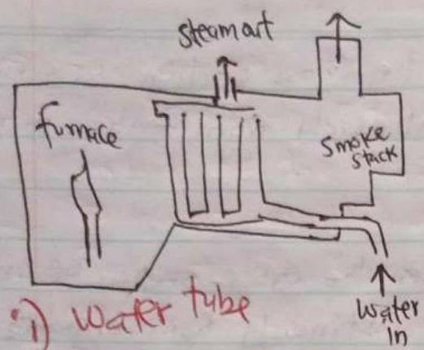
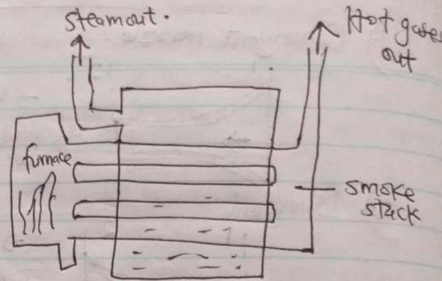
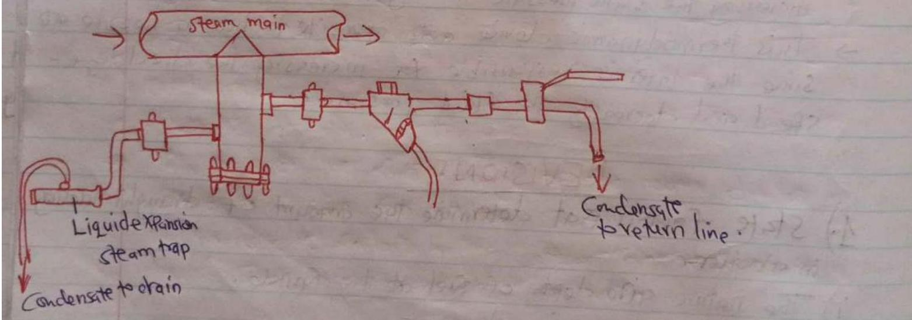
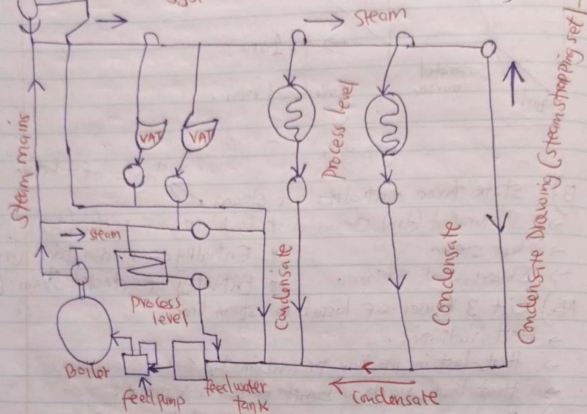

📝
Topic 07
Revision Questions
01
General Principles & Safety
-
State factors that determine the amount of draught necessary in a boiler.
- The nature and depth of fuel at the furnace.
- Design of combustion chamber
- The rate of combustion required.
-
With aid of sketches differentiate between water tube and fire tube boilers.
Fire Tube
Water Tube
ii) water tube → water in
-
With the aid of labelled diagrams, explain the difference between the following methods of trapping steam.
- Group trapping.
- Individual trapping.
i) Group trapping → Collecting condensate from several sections of steam-heated equipment into one condensate line that discharges into a single trap.
- It is typically discharged because it can cause pressure imbalance, which leads to problems such as water logging and water hammer that can damage the equipment.
 -
State any applications of steam in medical field.
- Sterilization in autoclaves.
- Cooking in kitchen
- Washing in laundry
- Calorifiers for heating.
-
Explain the methods used to achieve dry steam on steam generation plant.
- Dry steam plants use hydrothermal fluids that are primarily steam. The steam travels directly to a turbine, which drives a generator that produces electricity.
- The steam eliminates the need to burn fossil fuels to run the turbine.
- These plants emit only excess steam and very minor amount of gases.
-
Explain the recommended installation procedure before commissioning an inverted bucket steam trap.
- Check that the trap is suitable for the effective maximum differential pressure and operating pressure in the system.
- Install the trap only vertically with the cover at the top.
- The use of an upstream protection strainer is always recommended.
- If the trap is used at maximum capacity, the piping downstream of the trap needs to be the proper size.
- With very low steam capacities and/or superheated steam, it is advisable to install a check valve upstream of the trap.
- If the system is required to operate on a continuous basis, arrange for a shut-off valve to be installed upstream and a bypass.
- In case of a raised condensate return system, a check valve should be fitted downstream of the trap.
-
Outline the methods used to test steam traps.
- Visual observation ☑
- Measuring temperature ☑
- Measuring sound / vibrations or ultrasound ☑
-
Explain the problems caused by water in steam distribution systems.
- Reduced efficiency
- Poor steam quality
- Corrosion of the copper pipes
- Frequent maintenance
- Frequent blowdown
- Causes water hammer
- Reduced boiler life
-
Distinguish between priming and foaming in relation to boiler water treatment.
- i) Priming → The process of formation of wet steam.
- ii) Foaming → Is the unrelenting formation of bubbles or foam in the steam boiler that does not cease easily.
-
State any 3 legal safety requirements for a boiler to be certified under the provision of Factories Act.
- Boiler Controls - Cattahonts and construction
- Boiler Maintenance
- Examination and use.
02
Thermodynamics & Troubleshooting
-
Outline the operation of baffle type separators in steam distribution system.
- This reduces the kinetic energy of the water droplet, and most of them will fall out of suspension.
- The condensate collect in the bottom of the separator, where it is drained away through a steam trap.
-
Explain steam formation process in aboiler.
T ↑heating ↓boiling ↓superheating → p = 1 atm liquid Saturated mixture ↓Superheated vapor. (Entropy) h
-
State three enthalpies of steam →
$$hg = hf + hfg$$
- Saturated (dry) steam
- Enthalpy of water (hf)
- Wet steam
- Enthalpy of evaporation (hfg)
- Superheated steam.
- Enthalpy of saturated steam (hg)
-
List 3 leases of losses in steam lines.
- Heat radiation.
- Heat lost in moisture present in the fuel.
- Heat lost due to unburnt Carbon in ash pit.
-
Explain why dry steam is preferred to wet steam.
Dry steam does not contain moisture, hence increases the total heat in the steam. -
Explain the operation of Coalescence type separators.
- These water molecules tend to coalesce, producing droplets that are too large to be carried further by the gas system. As the size of the droplets increases, they become too heavy and ultimately fall into the bottom of the separator.
-
Draw a labelled diagram of typical steam circuit.
(Basic steam pipe cct) -
State the conditions that should be met when sizing steam traps on a steamline.
- Size of the existing piping.
- Boiler Performance.
- Reliability.
- Working Pressure
- Temperature to be withstood.
-
State any two factors that the efficiency of a boiler depends on.
- Flue gas exit.
- Temperature
- Excess air and burnout.
-
Explain three basic principles of heat transfer in bidders.
- Conduction
- Convection
- Radiation
-
Explain why it is recommended that Gudenase is gravity discharged into grease for around pumping to the bidders Fed tank.
- Equal equipment life.
- Improve operational efficiency.
- Save energy.
- Ease of maintenance.
-
State any two causes of wet steam.
- Improper piping
- Water level. (high)
- Improper blowdown
- Size of the drum
- Operating pressure
- Fluctuating loads.
- Excess chemical treatment
- High total Dissolved solids
- Reductor chemistry.